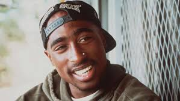
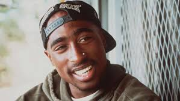

¡Prepárate para sumergirte en tinta!
Splatoon no solo revolucionó los shooters con su estilo colorido y frenético, también construyó un universo lleno de historia, secretos y evolución a lo largo de varias generaciones de consolas Nintendo.


Splatoon no solo revolucionó los shooters con su estilo colorido y frenético, también construyó un universo lleno de historia, secretos y evolución a lo largo de varias generaciones de consolas Nintendo.


El equipo que diseñó el primer Splatoon provino del equipo de Animal Crossing, junto con el director de Star Fox 3D y uno de los directores de Nintendo Land


Los Inklings se plantearon originalmente como conejos. Esto se debía a que su color blanco facilitaba ver si habían sido manchados de pintura y sus orejas largas permitirían rastrear fácilmente la dirección de los personajes

Una vez descartados los conejos, se eligieron calamares en lugar de pulpos porque la forma de flecha de la cabeza de los calamares ayuda a los jugadores a saber a qué dirección miran sus oponentes, algo más difícil con los pulpos

La elección del diseño de manchar todo de tinta se relaciona con el vandalismo, lo que encaja con la mezcla de estética underground de los 80 y 90 y el entorno post-apocalíptico

Hay referencias a marcas reales en el juego, como ESPN, Gatorade y Game On


Después de derrotar al jefe final, si te quedas en la sala, se escuchan extraños ruidos y gritos que, según la teoría más establecida, son la civilización Octariana en pánico por haberles quitado los siluros eléctricos
Aunque, lo más impactante es que el director del juego no sabía de la existencia de estos gritos; fueron insertados por un desarrollador durante los últimos días de desarrollo

En el juego se revela que Mar y Tina (las Calamarciñas) en realidad son primas, a pesar de que en inglés el nombre se traduce como "Hermanas Calamar" (Squid Sisters), lo que indica que el nombre es una fachada

En varios ocasiones durante el modo campaña del juego se pueden apreciar varias referencias a la saga de Pokémon, como un diálogo con el capitán Jibión en Torres Merluzas en el cual aparece la expresión: "“Rollers are perfect like chargers are the very best, like no one ever was" referencia al opening de Pokémon

La estética de Céfalo Pop (Perla y Marina) en la Octo Expansion hace referencia a dos raperos: la corona y la bandana son referencias a Notorious B.I.G. y Tupac Shakur, respectivamente
 

Asimismo, en el juego hay muchas referencias a la música y cultura urbana de los 80 y 90: grafitis, ropa, rap, e incluso los nombres de las estaciones en el modo Octo Expansion hacen alusión a grupos musicales o frases famosas.